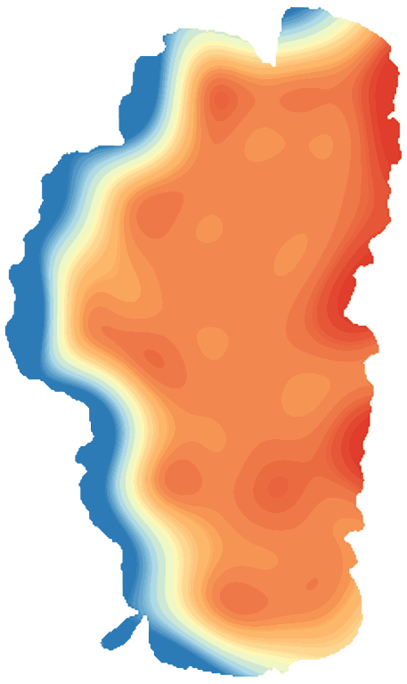

LakeScope › CA
Lake Tahoe today
Updated 2026-11-14 - Atlas Labs
Clear water, 54°F water, level steady, near normal, windy Friday (20 mph W).
Water level
6229.42 ft
USGS gauge 10337000 - 2026-11-14
7-day trend: steady (+0.04 ft). Compared with normal for this date: -0.2 ft (same weeks, 2016-2025).
Water clarity and algae
Clear water Last clear view: a few days ago.
Surface temperature
54°F
seen from space on 2026-11-12

Ice
Open - 0% ice cover
Estimate from weather and satellite, not a measurement. Check the ice yourself before going on it.
Weather, next 3 days
| Day | Sky | High / low | Wind | Rain |
|---|---|---|---|---|
| Friday | Chance Light Snow | None / 31°F | 20 mph W | 34% |
| Saturday | Mostly Sunny | 44 / 37°F | 5 mph W | 0% |
| Sunday | Mostly Sunny then Chance Light Rain | 47 / 35°F | 10 mph SW | 47% |
Sunrise 06:42 - sunset 16:46 - Waxing crescent. National Weather Service.
Get the LakeScope app: alerts and the 3-D view of Lake Tahoe